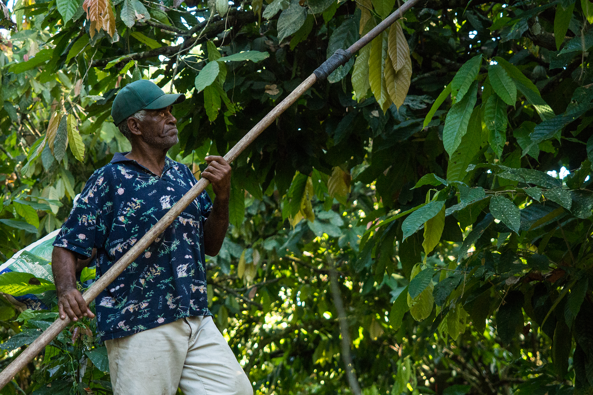

Der globale Kakaomarkt ist ein Labyrinth. Bis eine Kakaobohne eine europäische Rösterei oder eine Schokoladenmanufaktur erreicht, hat sie im Durchschnitt sechs bis acht verschiedene Hände passiert. Lokale Sammler, Exporteure, internationale Broker, Logistik-Zwischenhändler und Großhändler – jeder dieser Akteure schlägt eine Marge auf, während die Transparenz über die tatsächliche Qualität und die Bedingungen vor Ort mit jedem Schritt abnimmt.
Für Einkäufer, die hochwertigen Rohkakao kaufen möchten, bedeutet dies oft: Sie zahlen für Ineffizienz, nicht für Qualität. Bei Santana Fruits haben wir uns entschieden, dieses Modell grundlegend infrage zu stellen. Wir sind nicht nur Händler; wir sind Produzenten und Exporteure in einer Einheit.
In der klassischen Lieferkette ist der Käufer weit vom Ursprung entfernt. Wenn Sie Trinitario Kakaobohnen über konventionelle Kanäle beziehen, erhalten Sie oft eine Mischung aus verschiedenen Chargen. Die Rückverfolgbarkeit endet meist im Hafen des Exportlandes. Für einen Technical Sales Expert oder einen Produktionsleiter in der Lebensmittelindustrie ist das ein Risiko. Schwankende Fermentationsgrade und unkontrollierte Lagerbedingungen während der vielen Zwischenstationen führen zu einem instabilen Geschmacksprofil.
Der Kakao Direkt Handel wird oft als Marketing-Schlagwort missbraucht. Doch echter Direkthandel erfordert Infrastruktur vor Ort. Ohne eigene Präsenz im Ursprungsland bleibt man von Dritten abhängig.
Die Dominikanische Republik ist weltweit führend im Export von Bio-Kakao und bekannt für ihre hochwertigen Trinitario-Sorten. Santana Fruits nutzt diesen Standortvorteil durch ein Modell der vertikalen Integration. Das bedeutet für Sie: Wir kontrollieren die gesamte Wertschöpfungskette.
Ein wesentlicher Teil unserer Philosophie ist die physische Präsenz vor Ort. Als CEO von Santana Fruits bin ich regelmäßig persönlich auf den Plantagen in der Dominikanischen Republik. In der Branche der Agrar-Exporte wird viel über Zertifikate gesprochen, aber nichts ersetzt die sensorische Prüfung und die Kontrolle der Prozesse durch das eigene Team.
Wenn wir über Technical Sales sprechen, meinen wir Fakten: Wir messen Feuchtigkeitsgehalte, kontrollieren Schnittproben (Cut-Tests) und überwachen die Einhaltung der strengen Export-Standards. Nur so können wir garantieren, dass der Kakao, den Sie bei uns bestellen, exakt die Spezifikationen erfüllt, die Ihre Produktion erfordert.
Warum fokussieren wir uns so stark auf Trinitario Kakaobohnen? Es ist die perfekte Symbiose für den anspruchsvollen B2B-Markt. Trinitario vereint die Robustheit der Forastero-Pflanze mit den feinen, aromatischen Noten des Criollo-Kakaos. Für Schokoladenhersteller bietet dieser Kakao ein breites Spektrum – von fruchtigen Noten bis hin zu erdigen, kräftigen Nuancen.
Durch den Verzicht auf Zwischenhändler können wir diese Premium-Qualität zu Konditionen anbieten, die im herkömmlichen Spezialitätenhandel kaum möglich wären. Wir eliminieren die „Dead Costs" der Lieferkette und investieren sie stattdessen in bessere Preise für unsere Partner und eine nachhaltige Bewirtschaftung unserer Flächen.
Unsere Expertise beschränkt sich nicht nur auf Kakao. Die vertikale Integration erlaubt es uns, saisonale Synergien zu nutzen. Während wir ganzjährig im Kakaosegment aktiv sind, bereiten wir uns beispielsweise intensiv auf die Avocado-Saison in der Dominikanischen Republik vor, die von Dezember bis Mai ihren Höhepunkt erreicht (insbesondere die Sorte „Carla"). Diese Diversifikation stabilisiert unser Unternehmen und macht uns zu einem verlässlichen Langzeitpartner für den europäischen Lebensmittelgroßhandel.
Der Markt verlangt nach Transparenz. Endverbraucher wollen wissen, woher ihre Lebensmittel kommen, und Regulierungen wie das Lieferkettensorgfaltspflichtengesetz (LkSG) machen lückenlose Dokumentation für Unternehmen zur Pflicht.
Mit Santana Fruits erhalten Sie nicht nur ein Produkt, sondern eine kontrollierte Lieferkette. Wenn Sie bei uns Rohkakao kaufen, beziehen Sie diesen direkt vom Erzeuger. Keine Umwege, keine versteckten Kosten, keine Qualitätskompromisse.
Wir laden Sie ein, die Effizienz eines echten Direkthandelsmodells kennenzulernen. Unsere Logistik ist auf die Anforderungen des modernen B2B-Geschäfts ausgelegt – professionell, termingerecht und mit dem Fokus auf technischer Exzellenz.
Sind Sie bereit für eine direktere Art des Rohstoffeinkaufs?
Trinitario Kakaobohnen, Rohkaffee und Avocados – direkt aus der Dominikanischen Republik, ohne Zwischenhändler.
📩 Kontaktieren Sie uns für Spezifikationen und individuelle Angebote.
Santana Fruits – vom Ursprung bis zu Ihnen.